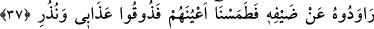

BİZ ŞÜKREDENİ
BÖYLE MÜKÂFÂTLANDIRIRIZ
33. Lût’un kavmi de uyarıcı peygamberleri yalanladı.
34. Biz de üstlerine taş (yağdıran bir fırtına) gönderdik. Ancak Lût ailesi
müstesnâ, onları seher vaktinde kurtardık.
35. Katımızdan bir nimet olarak. Biz şükredeni işte böyle mükâfâtlandırırız.
36. Andolsun ki, Lût onları bizim şiddetli azabımızla uyardı. Fakat onlar bu
tehditleri kuşkuyla karşıladılar.
37. Onlar Lût’un misâfirlerine karşı kötülük yapmayı planlamışlardı. Hemen biz
onların gözlerini silme kör ettik. «Haydi azabımı ve uyarılarımı tadın!» (dedik).
38. Bir sabah kendilerine, yakalarını bir daha bırakmayacak olan bir azap gelip
çattı.
39. İşte azabımı ve uyarılarımı tadın! (denildi).
40. Andolsun biz Kur’ân’ı, öğüt almak için kolaylaştırdık. O halde düşünüp ibret
alan yok mu?
Lût kavmi geride geçtiği gibi uyarıları veya uyarıcıları yalanladı.
34. Biz de üstlerine taş (yağdıran bir fırtına) gönderdik. Ancak Lût âilesi
müstesnâ, onları seher vaktinde kurtardık.
“Biz de üstlerine taş yağdıran bir fırtına gönderdik.” Yâni avuç içini
doldurmayacak kadar küçük taşlar atan fırtına gönderdik.
Âcizâne kanâatime göre, onların taş atılmak suretiyle azâb edilmeleri, livâtadan men
edilmelerine rağmen kaçınmayıp nutfelerini döl yatağından başka yere attıkları içindir.